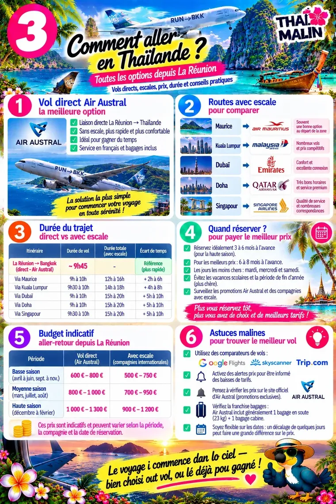

Aperçu gratuit · Édition 2026
🌴 Mini-guide Thaïlande
Bangkok, Chiang Mai, les îles — l’essentiel pour bien partir
Comment y aller : vols et itinérairesAperçu 1/3

Itinéraires conseillésAperçu 2/3

Les erreurs à éviterAperçu 3/3

Il reste 20 pages à découvrir
Dans le guide complet :
- Avant de partir et formalités
- Comment aller en Thaïlande
- Parler thaï au quotidien
- Où aller, itinéraires de 7 à 30 jours
- Se déplacer, se loger, manger
- Culture et traditions
- Excursions et activités
- Numéros utiles et SOS
Paiement sécurisé Stripe. Ton code arrive par e-mail juste après l’achat.